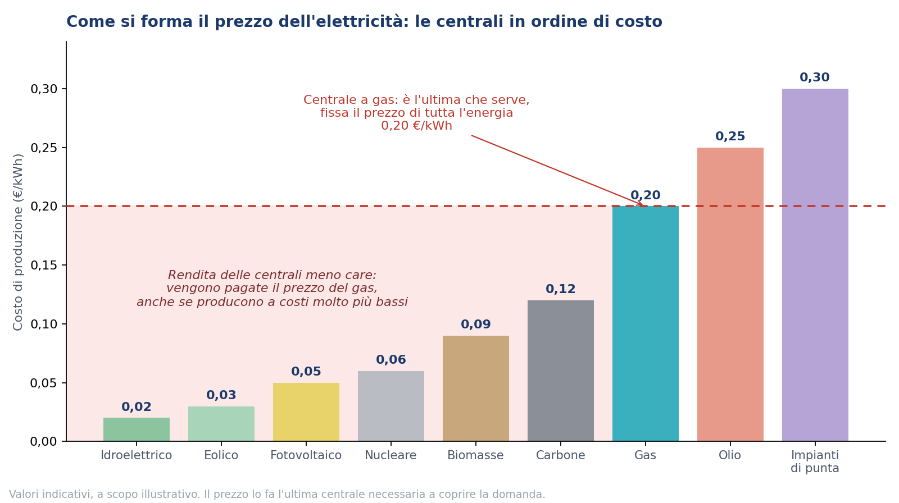

I prezzi di Settembre e di Ottobre, fin qui
A Settembre il prezzo dell'energia elettrica (il PUN) è arrivato a 0,208 €/kWh, 0,028 in più di Agosto e il valore più alto da Gennaio 2023, quasi il doppio rispetto a un anno fa (+90%). Il gas è a 0,840 €/Smc, il massimo da quando esiste l'indice, contro 0,687 di Agosto.
Ottobre, fin qui, è peggio. Con i dati al 19 siamo a 0,219 €/kWh per la luce e 0,887 €/Smc per il gas. Il 19 Ottobre il PUN ha toccato 0,263 €/kWh, il giorno più caro dal 21 Dicembre 2022.
Per dare la misura, i calcoli dell'analista Donato Leo dicono che dal 2021 a oggi sono passati 2.116 giorni e solo 198 hanno avuto un prezzo più alto, tutti tra Ottobre 2021 e Dicembre 2022, in piena crisi energetica. Quest'anno il PUN ha superato 0,200 €/kWh in 41 giorni, nel triennio 2023-2025 era successo 4 volte. La media mensile sale da cinque mesi di fila, +82% da Maggio.
Il freddo, intanto, non è ancora arrivato.
Dietro c'è la catena di sempre: tensioni in Medio Oriente, il petrolio (Brent) a 121,70 $ al barile a Settembre (+30% su Agosto), gas che costa di più e centrali a gas che producono di più. Le fonti tradizionali, quasi tutte gas, coprono il 55,4% delle vendite in borsa, le rinnovabili scendono al 42,8% con solare e idroelettrico ai minimi.
Come si forma il prezzo: gas, ETS ed ETS2 in parole semplici
Le centrali vengono chiamate in ordine di costo: prima idroelettrico, eolico, fotovoltaico, nucleare, per ultime quelle a gas. Il prezzo lo fa l'ultima centrale che serve a coprire la domanda, e quando è a gas tutta l'energia viene pagata a quel prezzo, anche quella che costa molto meno produrre.

Dentro questo prezzo pesa anche l'ETS. È il sistema europeo dei permessi di emissione: chi produce energia con gas o carbone, o fa acciaio, cemento, ceramica, deve comprare un permesso per ogni tonnellata di CO2 che emette, e il permesso ha un prezzo di mercato. Quando la centrale a gas è quella che fissa il prezzo dell'elettricità, il costo del permesso finisce dentro il prezzo di tutta l'energia: Confindustria lo stima in circa 0,03 €/kWh.
L'ETS2 è lo stesso meccanismo applicato a riscaldamento degli edifici e carburanti per i trasporti. A comprare i permessi saranno i fornitori di gas, gasolio e benzina, che poi li scaricano sul prezzo che paghi tu. Parte nel 2028 secondo l'accordo più recente.
Il TOPE Italico: cos'è e perché per me è una toppa
Il TOPE Italico è un tetto al prezzo del gas che le centrali usano per produrre elettricità, sul modello della cosiddetta eccezione iberica (il tetto applicato in Spagna e Portogallo). Il PUN scende, la differenza tra il prezzo vero del gas e il tetto viene pagata alle centrali e poi, in buona parte, ricade sui clienti finali. In Spagna l'hanno pagata i clienti con contratto indicizzato (che segue il mercato) e anche quelli con prezzo fisso firmato dopo l'annuncio del tetto.
Il Governo ha raggiunto un'intesa preliminare con la Commissione europea, ma manca ancora la notifica formale a Bruxelles.
Quanto avrebbe pesato? Secondo la stima di Donato Leo, fatta con un simulatore suo e quindi da prendere come ordine di grandezza, nei primi 17 giorni di Ottobre il PUN medio è stato di 0,216 €/kWh. Con un tetto sul gas a 0,64 €/Smc il PUN sarebbe sceso a 0,177 €/kWh, ma bisogna aggiungere 0,016 €/kWh di costo della compensazione alle centrali, quindi il risultato è 0,192 €/kWh, l'11% in meno e non il 18% che si vedrebbe a prima vista. Con un tetto a 0,43 €/Smc il calo netto sarebbe del 21%.
Il costo resta, cambia solo chi lo paga. Il mio punto di vista: qualsiasi manovra fatta in emergenza è una toppa, e si spera solo che non si strappi.
Il rischio non è solo il prezzo
Il rapporto di Confindustria del 14 Ottobre fotografa bene la situazione: luce a 0,208 €/kWh a Settembre contro 0,114 di Febbraio, in media il 35% sopra la Germania nei primi nove mesi del 2026, gas europeo (TTF, il prezzo di riferimento in Europa) salito del 133% in sei mesi, transiti dallo Stretto di Hormuz scesi al 12%. Con il gas intorno a 0,95 €/Smc e il petrolio a 115 dollari, secondo Confindustria la crescita del 2027 si azzererebbe. A Novembre e Dicembre il gas europeo, comprato oggi per quei mesi, quota già circa 0,95 €/Smc.
Rispetto al 2022 è cambiata una cosa. Il gas oggi arriva e la sicurezza delle forniture è migliorata. Quella del prezzo no. Per questo la domanda da farsi è diventata "a che prezzo arriva?".
Un'analisi che ho letto questo mese lo spiega così: i prezzi non si muovono in modo simmetrico. Se il mercato scende, il vantaggio è limitato. Se sale con uno shock, il danno può essere molto più grande. Aspettare non è gratis.
Vale anche per chi pensa di essere coperto. Claudio Enriquez, che lavora da trent'anni sui mercati dell'energia, lo dice così: la percentuale di energia fissata da sola non basta, bisogna sapere quale prezzo è stato coperto, in quali ore l'azienda consuma e chi regge il rischio tra prezzo zonale (quello della tua zona di mercato), indice contrattuale (quello a cui è agganciato il contratto) e profilo di produzione (quando e quanta energia produci). "Il rischio più costoso, a volte, è quello che pensiamo di avere già coperto."
Novità: decreto bollette e MACSE
Il decreto bollette è la cornice in cui stanno le manovre di cui sopra, TOPE Italico compreso, e include un servizio di liquidità pensato per ridurre la distanza tra il prezzo di riferimento del gas in Italia (PSV) e quello europeo (TTF). Confindustria ne chiede l'approvazione rapida e, in parallelo, una riforma dell'ETS a Bruxelles.
Sui sistemi di accumulo, di cui ti avevo parlato il mese scorso a proposito dei BESS (le grandi batterie), ARERA ha fissato il premio massimo per la prossima asta MACSE, quella sulla capacità di stoccaggio elettrico per il 2029. L'asta è prevista il 24 Novembre.
Fissare ora? Tre domande prima di decidere
Sul "fissare ora" la mia posizione è questa: valutiamo caso per caso, necessità per necessità. Prima di fissare conviene però farsi tre domande.
Prezzo fisso
12, 24 o 36 mesi
PRO
- Sai già oggi quanto pagherai per tutta la durata.
- Se il mercato sale, la tua bolletta resta dov'è.
CONTRO
- Se il mercato scende non ne approfitti.
- Resti con lo stesso fornitore per tutta la durata.
- Alla scadenza il prezzo passa a indicizzato.
Prezzo variabile
segue il mercato
PRO
- Segui il mercato, se i prezzi scendono scende anche la tua bolletta.
- Non hai un vincolo di durata sul prezzo.
CONTRO
- Se il mercato sale, sale anche la bolletta.
- Non sai in anticipo quanto pagherai.